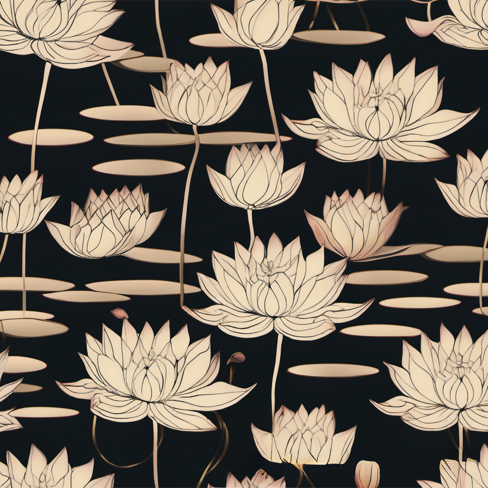
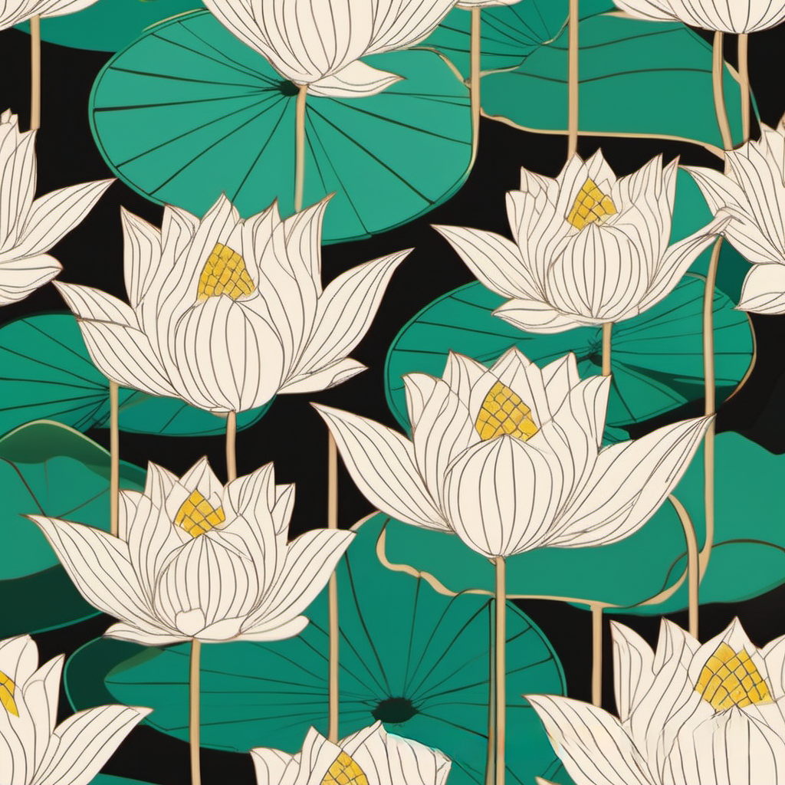
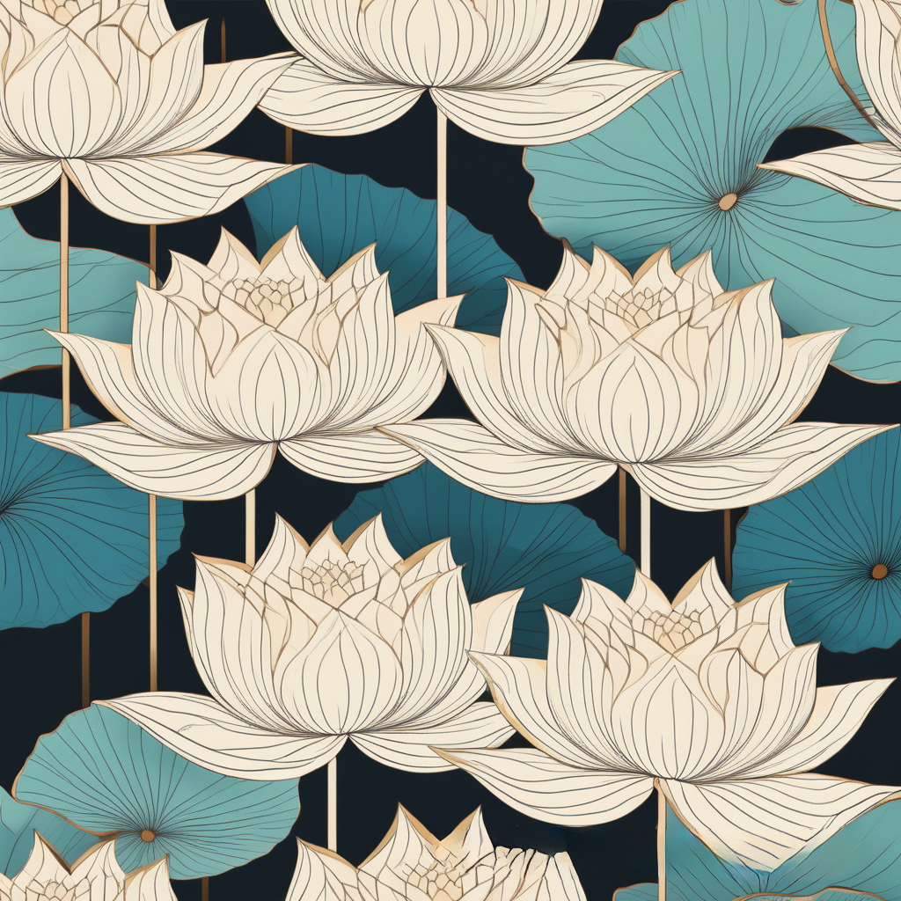
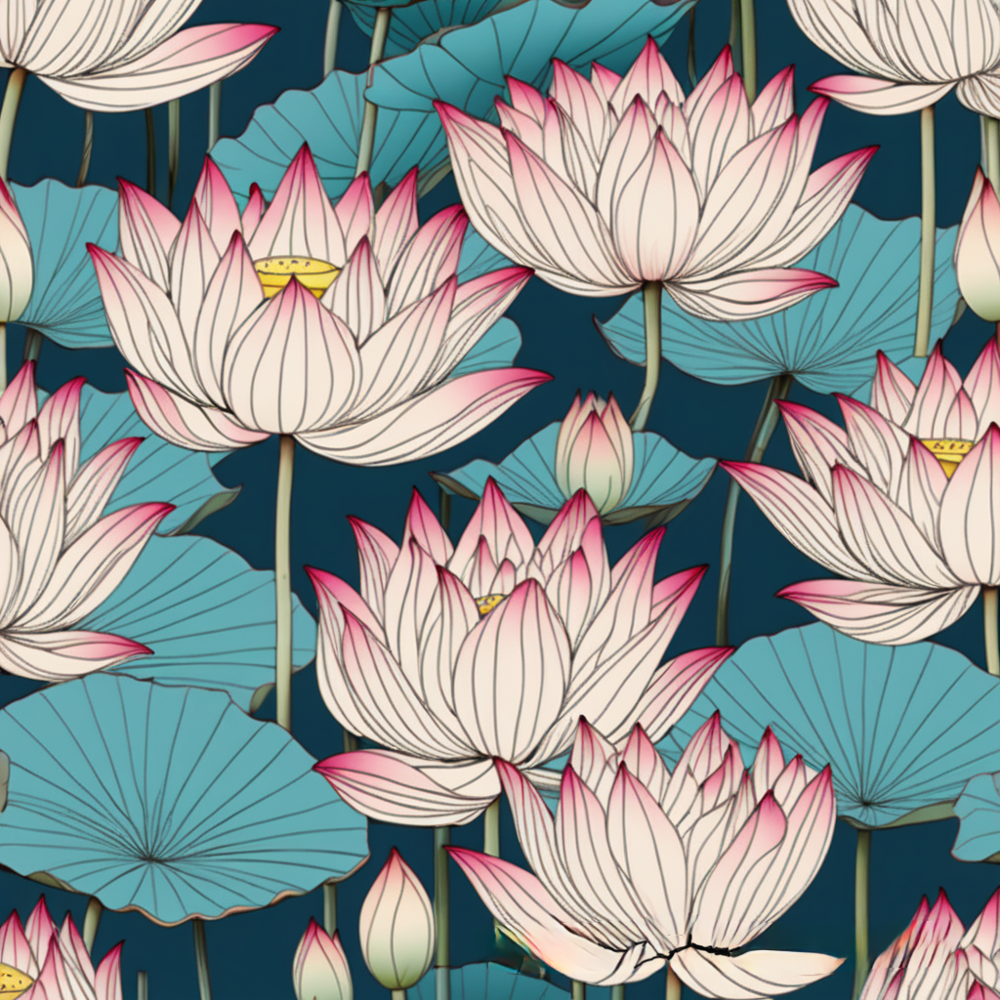
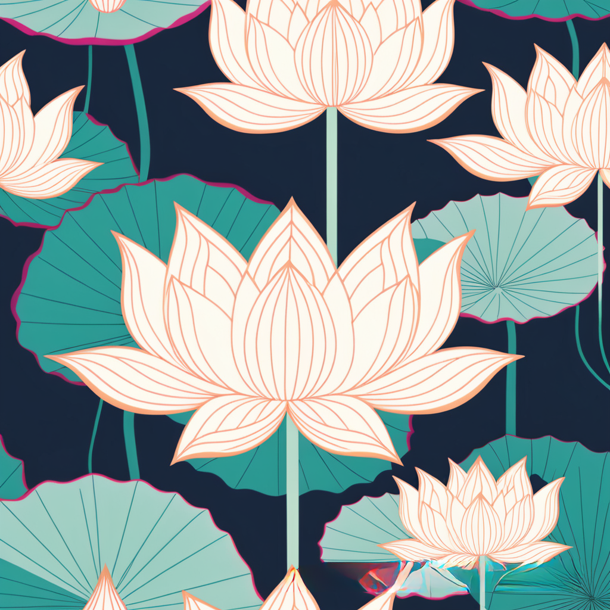
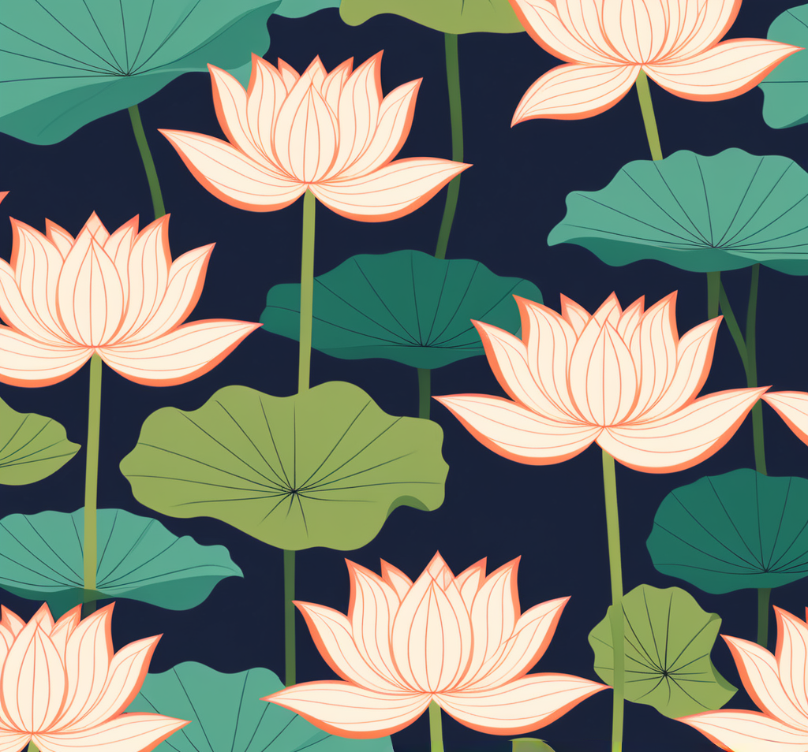

Lotuspond 1
The Lotus Pond project represents my favorite type of flower and embodies a sense of calm and focus that I cherish.
Before these images were transformed into digital artwork, they originated as acrylic paintings on canvas,
created and collected many years ago. This project reflects both my love for lotus flowers and the peaceful moments they inspire.

Lotuspond 2
Whenever I show my acrylic paintings to others, I'm often asked why I enjoy painting lotus flowers.
This question always makes me pause, feeling a bit stuck, because for me, painting a lotus flower is never just about the flower itself.
The first image that comes to mind is always a serene lotus pond, not just a single lotus bloom.

Lotuspond 3
Even when I try to draw a single lotus flower, it always feels off in a way I can't quite explain.
It's as if the picture is unfinished or incomplete. To me, the lotus pond feels like something greater,
something more profound, though I don't fully understand why.

Lotuspond 4
Someone once asked me if I often visit lotus ponds. The answer is no—not even once.
However, there is one photograph I've seen, a picture of the Nong Han Lotus Pond in Udon Thani, Thailand.
It's an expansive pond filled with vibrant red lotuses, and that image has always stayed with me.
Whenever I think of lotus flowers, that photograph immediately comes to mind.

Lotuspond 5
This pattern design is self-taught, inspired by the lotus flower.
Its simplicity holds a special personal significance to me, making it more meaningful than just a design.

Lotuspond 6
I believe the lotus pond image is perfect for practicing pattern art design.
It allows me to create a seamless, continuous image that feels infinite,
much like a vast lotus pond stretching endlessly into the horizon.